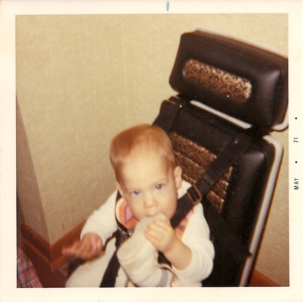
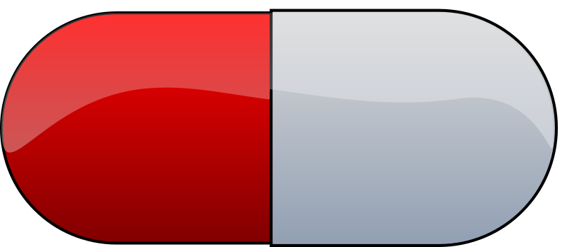

Introduction
5 days
:PROPERTIES
Target Audience?
- programmers
- aspiring programmers
- curious minded people
My Credentials

My Experiences

How I got to Clojure
New goal
Talk Outline
What is the question?
How much do I value learning?
How can I know the answer?
How can I measure the value I place on learning?
Now I know. What do I do?
What actions are consistent with this value?
Simplest possible outline
-Question -Answer -Action
Learning, the invisible value
In all affairs it's a healthy thing now and then to hang a question mark on the things you have long taken for granted. – Bertrand Russell
Brain, the invisible organ
What is the question?
How much do I value learning?
Understanding the question
How much do I value learning?
Value defined
Learning defined
- definition:
(learnersdictionary.com) the activity or process of gaining knowledge or skill by studying, practicing, being taught, or experiencing something
- etymology:
(merriam-webster.com) lernen Middle English to learn leornian Old English to learn last Old English foot print lira Latin furrow, track
- Learn as synonym for Teach
(merriam-webster.com) Master blacksmiths learned their apprentices in the craft of sword forging.
The history of learning

Two modes of learning
How can I know the answer?
How can I measure how much value I place on learning?
Answers aren't everything
Questions are powerful on their own.
I think this one is worth revisiting again and again.
How would you go about it?
The instrumental value of my learning based on 1000 point scale of importance.
Use my perspective to plant seeds in others minds, like impoverished saving me, not other way around. Not saying stupid people.
1000 basic needs: food, water, clothing, shelter.
Topsy turvy world view of my childhood - stars on the ceiling
Child like sense of curiosity, awe and wonder - Nature/Even from a magazine Wow!, Pepper/Insects/Thanksgiving
Philosophy - Stoics (Tim Ferris calls ideal personal operating system)
Time - First, Second aha!
Long Wave - Not just investing, but timing things, like education
Clojure
Family, friends and human relationships
Co-Intelligence & Futurism
Learning from failure yields long term success
Therefore learning, not winning is the greater value.
Know thyself, know others, 16 Personalities
Learning is Adapting
And adapting is human. (Tie in Clojure connection)
Now I know. What do I do?
What actions are consistent with this value?
If we value learning, why not get better at it, instead of dribbling the ball incessantly.
** What if there was a subject you could study which would improve your ability to learn and master any other subject? There just might be!
Power Hour
Culture of Concentration
The science of learning.

Learning How to Learn
Space Repetition etc.
Information age, but we're still in an industrial age mode
Everyone a teacher, video, microphone, record and publish.
What is the difference between Learning and Education
Inside Out vs Outside In
The power of relationships to fan our internal flame.
How are learning and adaptability related?
Learning is an expression of our adaptability.
From an evolutionary perspective, we are the very best learners in all of history.
We are in the midst of a massive adaptation to the age of information.
Are we getting it?
How many objects are we juggling in our learning?
How People Learn Empathy/Understanding of Expert that Learner doesn't possess rich mental model, or even capacity to organize rich mental model immediately. This is grown over time by ensuring that fundamental concepts are well understood. This should be the main objective, rather than conveying a deluge of facts, which have no meaningful place in the mind to be stored effectively.
Bite-size definitions for reading fluency and verbose, technically correct definitions for accurate understanding.
Examining the "genius programmer" image to foster welcoming culture, while still valuing competency, ingenuity & creativity.
If we're really that smart we can make it better for others.
Courage of honestly saying, "I'm not getting it". (Liberation from the weight of the expert mask)
My story: Hero to Zero
How I found Clojure, How I'd like others to find Clojure
Clojure community leading the way technically- react
Clojure could lead the way educationally too! This means people are suffering less before they find us.
My view of the essence of the web: Communication
Problems We're Trying Solve: Too much Struggle with Agenda, Not enough (or too much) with lessons!
Richer, more personally customized learning paths (Agenda)
Open Data Format - Community maintained.
Conceptual Support from Teachers without spoonfeeding.
Closing
Live as if you were to die tomorrow. Learn as if you were to live forever. – Mahatma Gandhi
Quotes
Learning is a growth exponentiator
The work is quite feasible, and is the only thing in our power.…Let go of the past. We must only begin. Believe me and you will see. –Epictetus
…Your values become your destiny.
Action expresses priorities. – Mahatma Ghandi
In mathematics the art of proposing a question must be held of higher value than solving it. –Georg Cantor
TODO Acknowledge existing culture of mentoring, learning, thinking, sharing, etc.
-Hammock Driven Development by Rich Hickey -Eloquent Explanations by Russ Olsen
- and many, many more.
Defining roles, eschewing roles: All people are communicators
Prosumption of Educational Materials, Mentorship etc.
People are not machines! We are …
Mentors are learners too.
Embracing the life-long learning mentality without being distracted by every shiny new thing.
Learning Methods
Project based learning vs theory & lecture
When is helping hurting?
Structured Struggle - Goldilocks learning.
Learning Paths
Interstate vs back roads
Machine Readable Curricula and Defined Learning Outcomes
Degreed
Own your data.
Student/Teacher Relationships (and Teacher Assistants)
Formal education precedes deep mentorship, but not completely.
Peer Groups (Student to Student)
Pair Programming and Study Groups
Apprenticeship/Mentor Relationships
What are the wants, needs and aspirations of both apprentices and mentors?
Apprentices
- Structured Struggle vs Unstructured Struggle (Defeated Exasperation).
- (Source: How People Learn) Empathy/Understanding of Mentor that Learner doesn't possess rich mental model, or even capacity to organize rich mental model immediately. This is grown over time by ensuring that fundamental concepts are well understood. This should be the main objective, rather than conveying a deluge of facts, which have no meaningful place in the mind to be stored effectively.
Mentors
How do we improve the lives of individuals in each group?
How can learners facilitate mentor's needs and wants?
How can mentors facilitate learner's needs and wants?
What tools, platforms and communication strategies exist or could exist to support these objectives?
New paradigms for collaboration?
Education/Marketing Co-ops
nownetworking.com
Open source & Commerce in Harmony (Not highly relevant: save for another talk)
Constructive Capitalism and the Long Wave
Innovations
Half-Screen Training
Learning How to Learn
Shell Steps
Now Networking
Learning Paths
Complex sugar obscuring simple Clojure fundamentals (Whole other talk)
How do we best de-complect Clojure's complexities from its simple core?
e.g. (Source: Russ Olsen) Russ helped me see that Namespaces were simply mappings of names to values but my learning of the subject was distracted by my instinct to tackle the complex aspects of Namespaces: symbols refer to vars, which refer to mutable storage locations, which contain values. These are too many incidental details to take on for a newcomer and distract from the fundamental simplicity of what Namespaces are about. It does, however, help to know that such incidental complexity has a purpose in Clojure, which is to keep unaware developers from shooting their toes off. This mentor related perspective helped me accept Clojure's complexity around Namespaces with more of an open mind, taking the sting out of it.
Prior Art
http://lifehacker.com/top-10-ways-to-teach-yourself-to-code-1684250889A
https://hackpledge.org/
Old Pitches
How can we best support the needs of Clojure learners? Imagine a future where a person interested in learning Clojure was presented with a menu of learning paths, each leading to well defined learning outcomes and offering various 'on-ramps' for learners of varying skill levels, especially, for learners completely new to programming. Imagine a future where every learner feels welcome and supported through supportive human relationships, from participation in users groups, educational co-ops, and especially one-on-one apprentice/mentor pairings. How can we place the needs of the learner above all else and grow Clojure to the scale of its full potential? Much progress has already been made, but what more can we do, together, to reach this goal?
A community-centered brainstorming session facilitated by vulnerably sharing my unconventional ideas about learning to program, and graciously inviting others to share their own. An experiment in group problem solving applied to the problem of learning 'Clojure'.
'Clojure' as used here is a heavily overloaded term, referring the body of knowledge encompassing Clojure(ish) technologies: ClojureScript, Datomic, React, React Native, bash/zshell, deployment technologies such as immutable infrastructure etc. etc. etc.
I intend to foster an interactive conversation with my audience about how we can create stronger and more creative mentor/apprentice relationships in our growing community. The jumping off point would be my personal learning path of going from Hero to Zero. (Hero to Zero is a greatly overloaded term that is meaningful to me, but likely mysterious to others, so it will be a conversational thread wherein I can relay my personal experience of learning programming and Clojure.)
Why am I the person giving this talk?
TODO Long and documented history of putting my foot in my mouth
TODO And thinking inside the box.
Seriously though!
Could the keys to unlocking our human potential be hidden in the mysteries of the human brain?
Decide for yourself after we explore recent discoveries, including powerful new insights in motivation and procrastination.
Research
Education: https://educarenow.wordpress.com/
educare (latin): To draw out that which lies within.
Contrast ecurare definition to that of Education: The process of receiving or giving systematic instruction, especially at a school or university.
Adult Education https://en.wikipedia.org/wiki/Adult_education
Purpose: Vocational, Social, Recreational, Self-development: Ultimately to achieve human fulfillment
Is knowledge good? Am I really helping? http://super-memory.com/articles/goodness.htm
https://www.brainpickings.org/2016/03/31/dostoyevsky-reason-emotion/
Tweeting
QR to Tweet http://qrickit.com/qrickit_apps/qrickit_qrcode_creator_tweet.php
Click to tweet https://clicktotweet.com/
TODO Talk, when viewed on video, will still allow people to tweet pre-defined statements or questions by scanning qr codes and submitting ideas.
Jay & Isaac
Org Mode notes
After opening notes.org on my system, I usually SPC t l and then SPC t L to get things looking good.
Truncating lines and visual breaks. Nice. If you want, you can establish those settings as defaults in your config file. Can use `SPC-?` (Helm describes bindings) to figure out the proper names.
Separation of TODOs
Below I've tagged this todo with isaac10, meaning its for you with a priority of 10 (lower number is higher priority and they go up by 10. That's an old basic programming trick which makes it easy to stick other todos inbetween, after the fact).
And it avoids the alphabetization problem of 0's! Sweet!
TODO isaac10 Please study up on how to wrangle css for reveal.js so we can get page elements where we want them.
- TODO Page element most concerned about is title at top left, space for video top right, paragraph/bullets left aligned half way down from top for first line.
- TODO These are subtasks under the main task, so they would also be for you unless my name is next the subtask.
- This system should work pretty good unless we run into git workflow issues, in which case we can move out to email etc.
- TODO items can be placed anywhere in the file so when you git pull you can just do a text search for "isaac" and bingo! :)
- Thank you! I'll create a new subheading under Jay & Isaac called Isaac Projects where we can keep your big picture stuff.
- TODO Great!
Isaac Projects
Wrangle Reveal.js CSS
- TODO isaac10 Please study up on how to wrangle css for reveal.js so we can get page elements where we want them. (copied from above)
- TODO Page element most concerned about is title at top left, space for video top right, paragraph/bullets left aligned half way down from top for first line.
Jay, I've got one stand-in solution for the top left h2 placement for now, using strictly CSS. And now that we've got custom JS involved too, we've got a lot of options for much more fine-grained and DOM-aware control.
- TODO Page element most concerned about is title at top left, space for video top right, paragraph/bullets left aligned half way down from top for first line.
- TODO isaac20 research then tinker with getting webcam image as part of web page. (This might be tricky with reveal.js. Not sure how to best do it?)
- I found this https://www.kirupa.com/html5/accessing_your_webcam_in_html5.htm
See email question about p2p video streaming.
- In the mean time, you can just use a blll have a lot more controlank white rectangle to act as place holder.
- On the title screen, the video would look better on the left. Not a high priority right now.
- reach out and let me know how things are going, if they are unclear, or to ask any questions :)
- I found this https://www.kirupa.com/html5/accessing_your_webcam_in_html5.htm